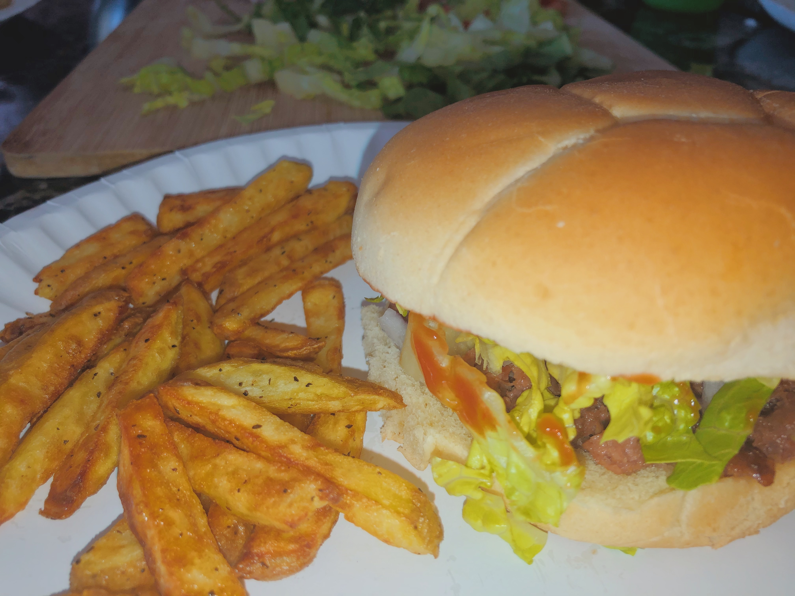
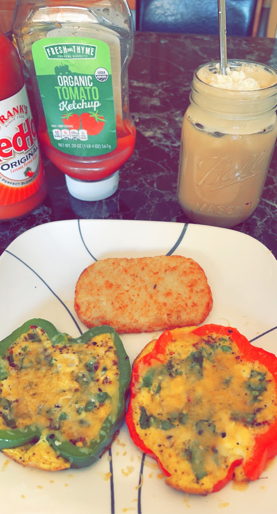
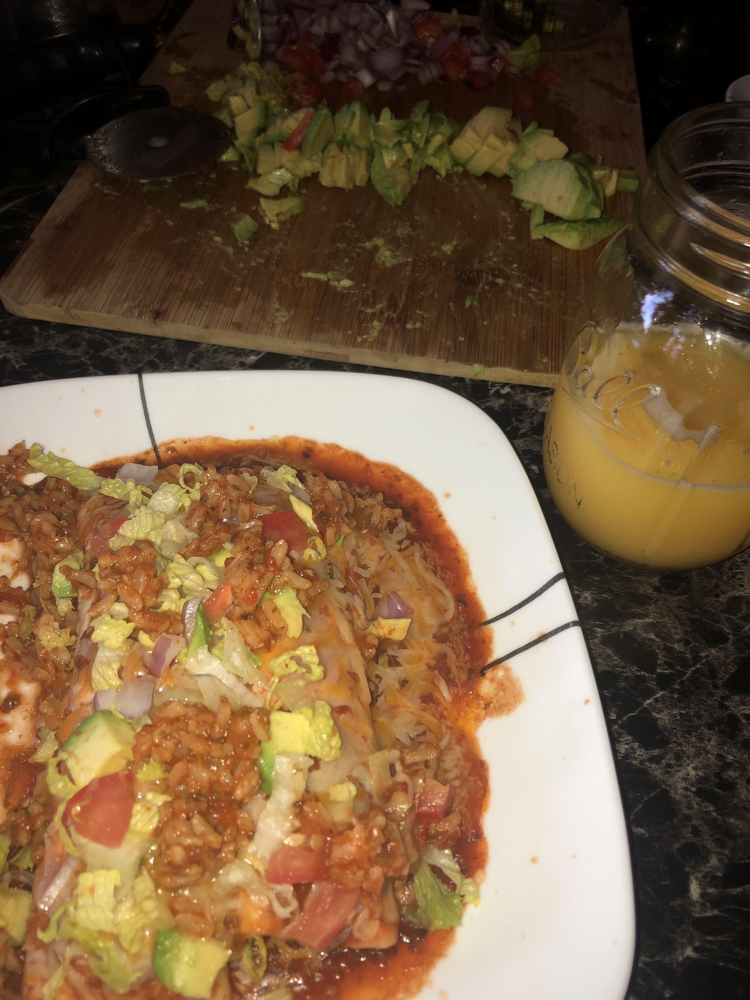
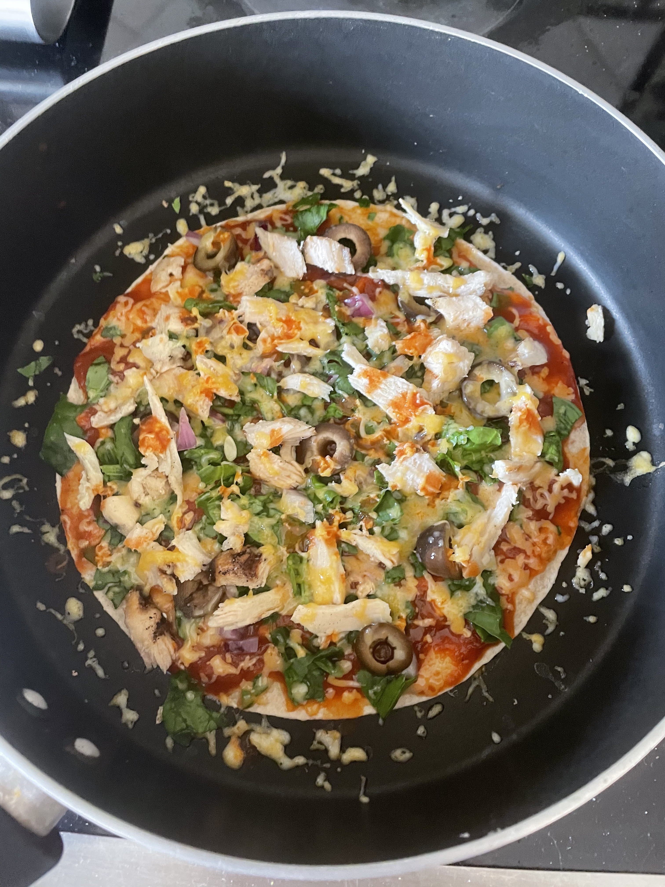
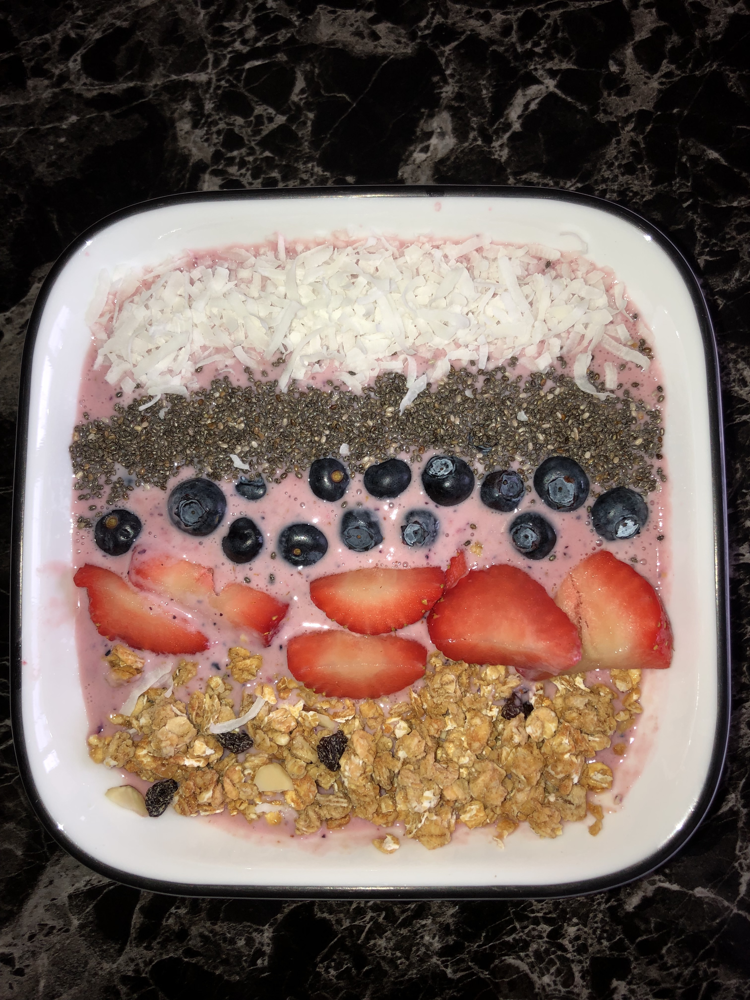
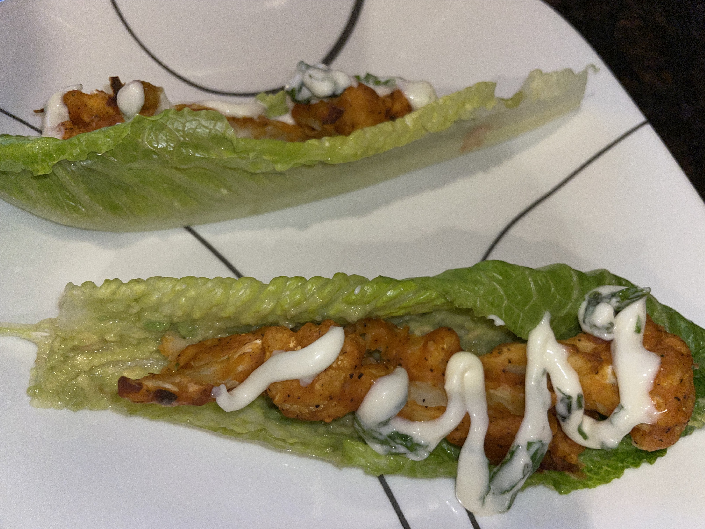
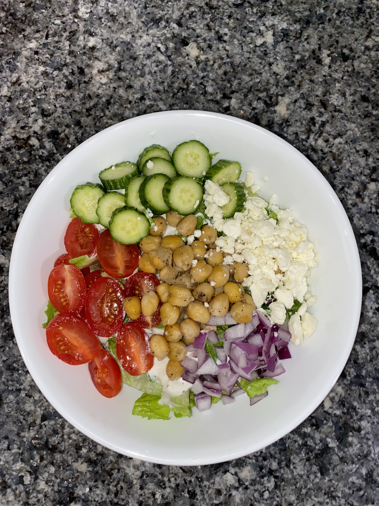
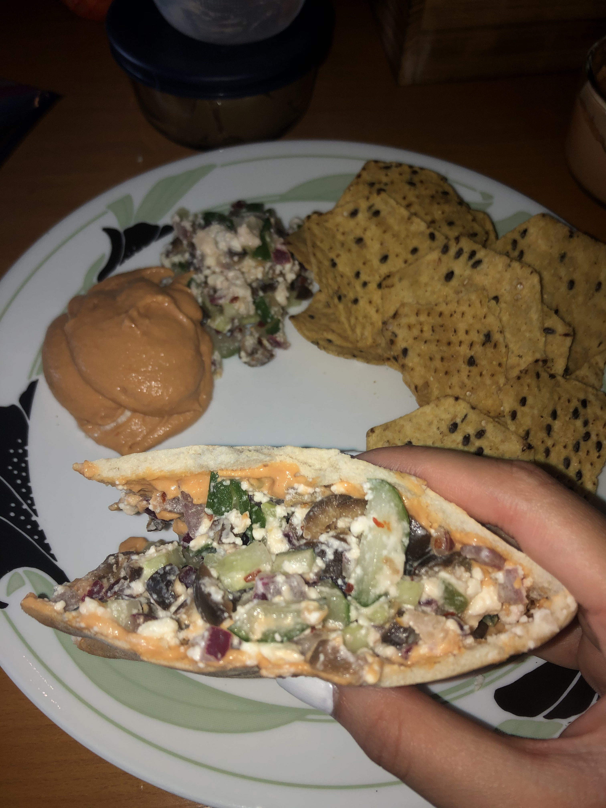
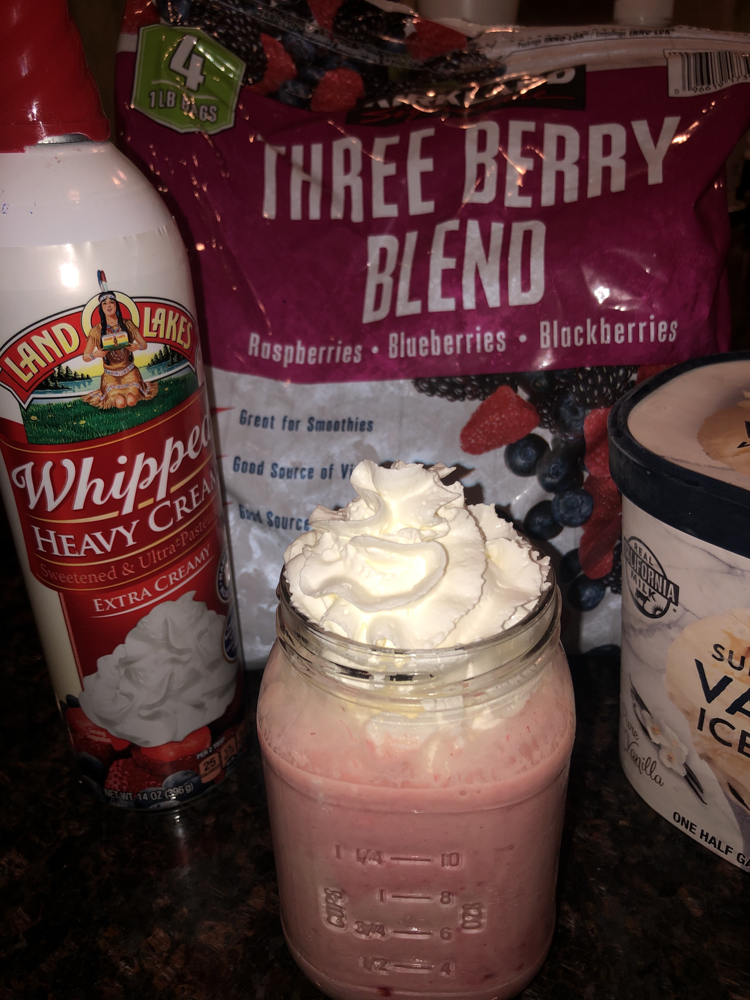

It all started in middle school, ever since then my favorite dish to eat is greek salad, simply because the flavors of the dressing with the crunch of lettuce, and soft garbanzo beans make a harmonious meal. It is such a satiating meal for me, and can be eaten at any time: morning or evening.
Food has always been an important part of my lifestyle. It intruiges me how much opportunity we are given to work with so many different ingreedients; the world is our oyster with the amount of possibilities we can create. That why here, I have shared some of my favorite cerations and go to meals.
        